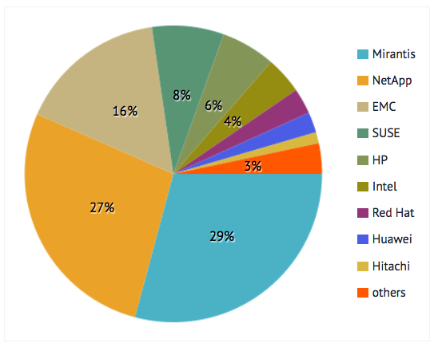
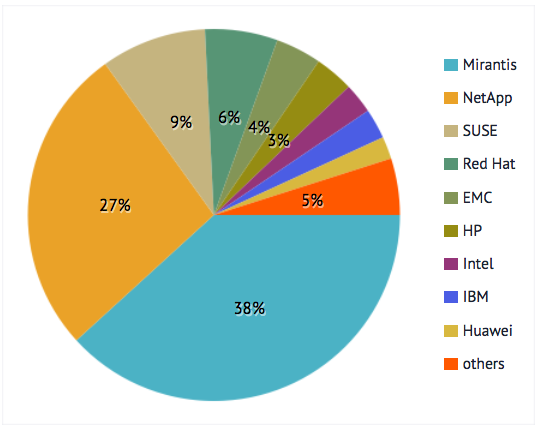
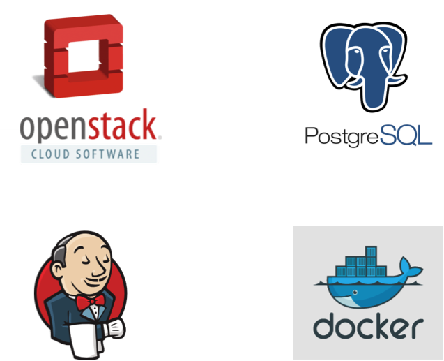
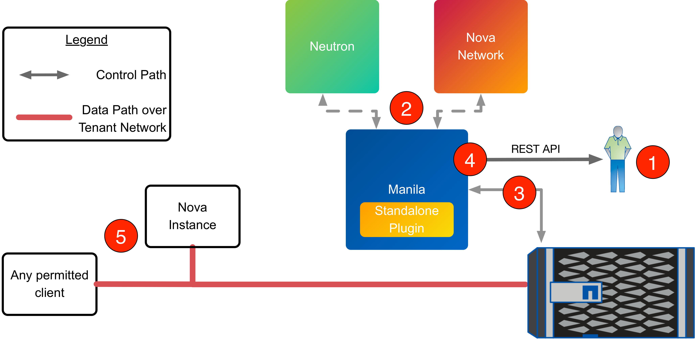
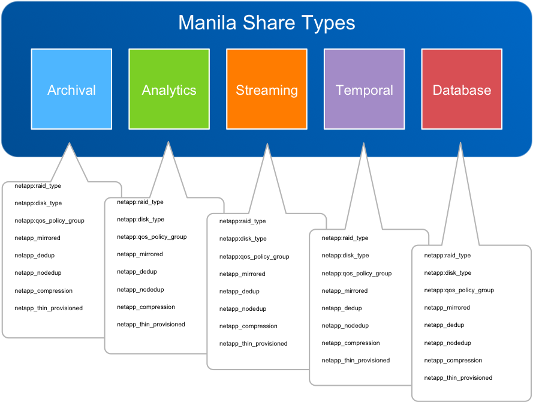
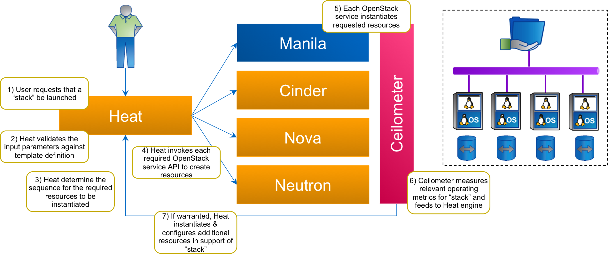
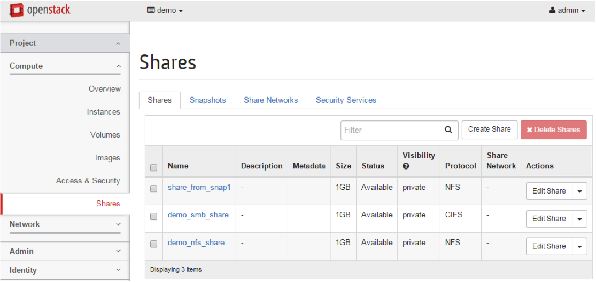
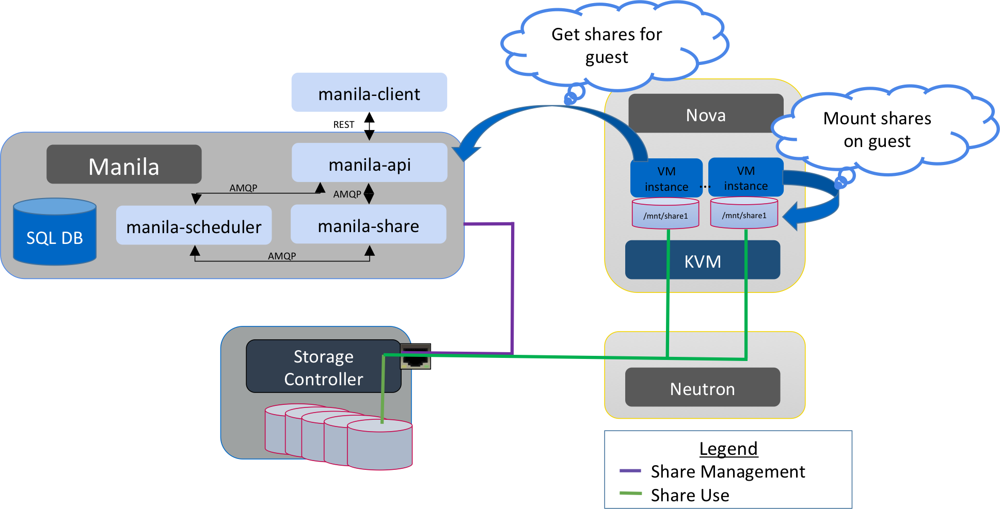
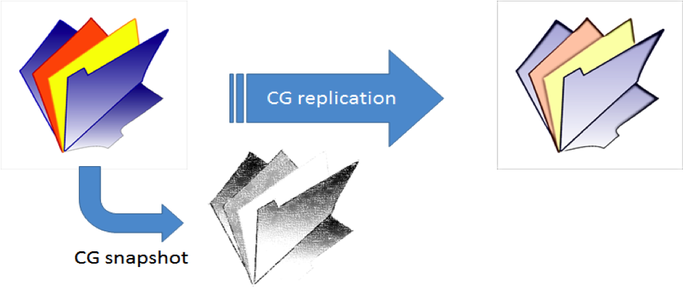

Manila
OpenStack Shared File Systems
Key concepts
-
Share (an instance of a shared file system)
- Size
- Protocol (NFS, CIFS, …)
-
Share access rules and security services
- IP, User/SID, Cert based
- Kerberos/Active Directory/LDAP
-
Share Types
- Support for backend driver specific extra specs
-
Snapshots
- Read-only copy
- New writable shares can be created from snapshot
-
Backend
- Provider of shares
- Multiple backend capable
-
Driver
- Vendor or technology-specific implementation
Who is involved in Manila?
Drivers
Drivers in blue are new in Kilo |
Contributors
|
|
Kilo Reviews |
Kilo Lines of Code |
|
The age of cloud file services
- OpenStack Manila: June 2013
- Microsoft Azure Files: May 2014
- Amazon Web Services Elastic File Services: April 2015
| Storage Service | Amazon Web Services | Microsoft Azure | OpenStack |
|---|---|---|---|
| Object | S3 | Blob & Table Storage | Swift |
| Archival (Cold) storage | Glacier | Azure Backup | - |
| Block | Elastic Block Storage (EBS) | Blob Storage | Cinder |
| File | Elastic File Storage (EFS) | Azure Files | Manila |
Use Cases for Manila
- Big Data
- Manila’s HDFS native driver plugin
- Sahara integration
- Database as a service
- Trove integration
- Support legacy enterprise applications
- Cross-tenant data sharing
- On-Demand development and build environments
- Continuous Integration
- Hybrid Cloud shares
- External consumption of shares
- Migration of workloads to the cloud from on-premise file shares
Use Case: Manila for Standalone Shared File Services Management
An Open, Standard API for File System Provisioning and Management
- Replace homegrown or legacy systems
- Improve IT responsiveness by providing self-service share management
- Integrate Manila with existing automation frameworks through REST API or CLI
Devops / Continuous Integration
Speeding up large dev/test suites through parallel testing
Challenge
Solution
|
 |
What's new in Kilo
- Plugable networking modes
- New drivers
- Level of access for shares (RO/RW)
- Public/Private shares
- Private share types
- Pool-aware scheduler support
- Horizon plug-in
- DevStack plug-in
- Heat integration
Manila can now operate in a variety of networking models
Supporting standalone deploments and tenant-scoped overlay networks
|
 |
Deliver workload-aligned shared file storage offerings
Create a storage service catalog that maps the differentiated features of storage to Manila
|  |
|
Heat with Manila
Adding shared file systems as first-class resources in Heat templates
Manila-UI
Horizon: The OpenStack Dashboard Project
- Became official for Kilo
- Is a Horizon sub-project
- Follows the current recommended integration model
|  |
Maintained and reviewed jointly by the Manila and Horizon teams
|
Manila Devstack Plugin
|
Manila Share Manage / Unmanage
Bring existing shares into Manila
|
Planned work in Liberty and beyond...
Third party CI
Goal:
Specific Deadlines:
|
1. Silent → 2. Reporting→ 3. Voting
|
Futures / Current Dev Discussion
|
|
Mount Automation:

ReplicationConsistency Groups |
Example CG Snapshot Scenario:
|
Share migration
|

|
How to get started with Manila
|
|
vagrant-devstack-manila |
Get Involved with Manila!
- https://github.com/openstack/manila
- https://github.com/openstack/python-manilaclient
- https://github.com/openstack/manila-ui
- https://wiki.openstack.org/wiki/Manila
- https://launchpad.net/manila
#openstack-manilaon IRC (Freenode)- Weekly meetings @ Thursday, 15:00 UTC